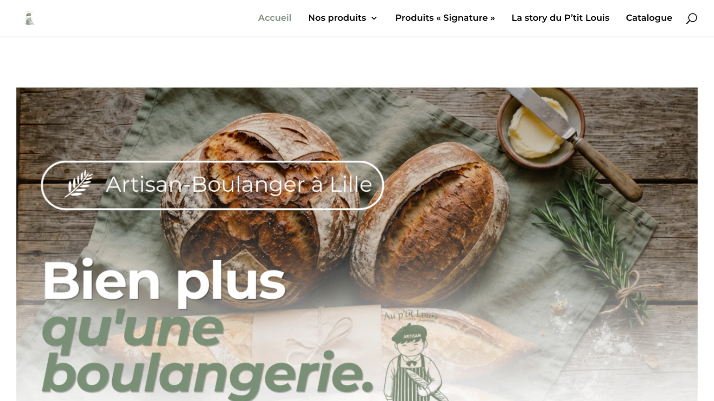
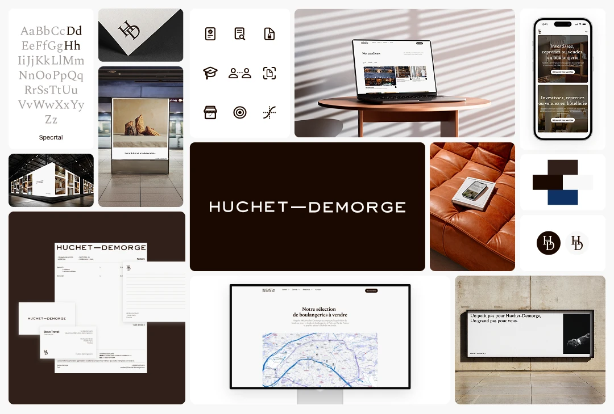

Préparé par Orem
Analyse des opportunités digitales identifiées pour Au P’tit Louis
Comment le site d’Au P’tit Louis peut mieux remplir ses boutiques, son Click & Collect et ses commandes spéciales
Le constat
Aujourd’hui, le site présente la boulangerie, mais il aide encore trop peu le client à passer à l’action
Mais aujourd’hui, le site ne transforme pas assez cette force en actions concrètes.
Ce qui existe déjà
Au P’tit Louis a déjà de vrais atouts
- 3 boutiques bien implantées à Lille
- une notoriété locale réelle
- des produits différenciants comme la Pôtisserie, les Pot’Potes ou le Croust’Wich
- une activité qui existe déjà en Click & Collect
Ce que cherche un client du quartier
Un client qui arrive sur le site veut surtout savoir
- où est la boutique la plus proche
- si elle est ouverte
- comment commander
- quoi choisir pour ce midi
- comment faire une demande pour un gâteau, un buffet ou une commande spéciale
Aujourd’hui, ces réponses ne sont pas assez visibles, pas assez simples et pas assez rapides à trouver.
Le site aujourd’hui
Une belle vitrine de marque
Le premier écran pose l’univers et le savoir-faire. Mais ce qu’un client du quartier cherche d’abord n’y apparaît pas : la boutique la plus proche, les horaires, la commande.
Le site présente la boulangerie. Il n’aide pas encore le client à passer à l’action.


Ce que le site fait perdre aujourd’hui
Le site ne fait pas encore assez bien trois choses essentielles
Autrement dit : le site parle de la boulangerie, mais il pourrait beaucoup mieux travailler pour elle.
01
Il n’oriente pas assez vers les boutiques
Les adresses, horaires et accès sont peu mis en avant, alors que ce sont les premières informations attendues par un client local.
02
Il ne simplifie pas assez la commande
Le parcours vers le Click & Collect manque de clarté, ce qui peut créer de l’hésitation ou de l’abandon.
03
Il ne capte pas les demandes à plus forte valeur
Le site ne donne pas de place claire aux gâteaux, aux événements, aux commandes entreprises ou au traiteur, alors que ce sont des demandes à fort potentiel.
Opportunité n°1
Faire venir plus de clients en boutique
Aujourd’hui, la force locale d’Au P’tit Louis est réelle, mais elle n’est pas assez exploitée sur le site.
Recherches de proximité à capter
Plusieurs opportunités existent
boulangerie Lille
boulangerie Wazemmes
boulangerie Porte des Postes
boulangerie ouverte Lille
Le site fonctionne surtout pour les personnes qui connaissent déjà la marque.
Il peut beaucoup mieux travailler pour les personnes qui cherchent une bonne boulangerie autour d’elles sans encore connaître Au P’tit Louis.
Ce que cela peut permettre
- plus de visibilité locale
- plus d’itinéraires vers les boutiques
- plus d’appels
- plus de passage spontané
Opportunité n°2
Transformer le site en vrai outil de commande
Aujourd’hui, le site donne envie, mais il n’accompagne pas encore assez clairement le client jusqu’à la commande.
Ce qu’un bon site de quartier doit permettre
Comprendre en quelques secondes
- où commander
- pour quelle boutique
- quels produits sont mis en avant
- comment récupérer sa commande simplement
Le Click & Collect existe déjà.
L’enjeu n’est donc pas de créer un service de plus, mais de le rendre plus clair, plus visible et plus simple à utiliser.
Ce que cela peut permettre
- plus de commandes préparées
- moins de friction
- une meilleure expérience pour les clients pressés
- plus de ventes récurrentes sur les produits du quotidien
Opportunité n°3
Mieux vendre le midi et les demandes à plus forte valeur
Aujourd’hui, ces deux dimensions ne sont pas suffisamment structurées ni mises en avant sur le site.
Le midi et le quotidien
Des produits qui peuvent créer une vraie habitude d’achat
- le Croust’Wich
- les Pot’Potes
- l’offre snacking
- les produits pratiques à emporter
Un autre levier, souvent plus rentable
Les demandes à plus forte valeur
- les gâteaux à commander
- les anniversaires
- les buffets
- les demandes entreprises
- les commandes traiteur
Ce que cela peut permettre
- plus de commandes du midi
- plus de récurrence
- plus de demandes qualifiées
- un panier moyen plus élevé
- une meilleure valorisation du savoir-faire de la maison
Ce que montrent les données
Les données confirment un potentiel de progression réel
Le site dispose donc déjà d’une base.
Le vrai potentiel se situe maintenant sur les personnes qui ne connaissent pas encore la boulangerie, mais qui pourraient la choisir demain.
4 166
visites par mois, en visibilité naturelle estimée
Mais cette visibilité repose en grande majorité sur des recherches liées directement à la marque. Autrement dit, le site est surtout trouvé par des personnes qui connaissent déjà Au P’tit Louis.
Recherches locales à fort potentiel, encore peu exploitées
boulangerie Lille
boulangerie Wazemmes
boulangerie Porte des Postes
boulangerie ouverte Lille
traiteur Lille
Un exemple concret : quand le site n’était pas au niveau réel de l’entreprise
Preuve sociale · Huchet-Demorge
Le contexte
Nous avons accompagné Huchet-Demorge, un cabinet historique reconnu dans ses marchés, avec une vraie réputation, un fort niveau d’expertise et un site déjà visible.
Le problème
Le problème n’était pas l’absence d’activité. Le problème, c’est que le site ne traduisait pas le prestige, la crédibilité et le niveau réel du cabinet.
Ce qui a été repensé
- le niveau perçu du site
- la clarté de la structure
- la réassurance
- l’expérience globale
- la capacité du site à rester performant et exploitable dans le temps
Résultat : le nouveau site est devenu
plus premium · plus rassurant · plus distinctif · plus cohérent avec l’image réelle du cabinet · et plus performant dans la durée
Même logique ici
Remettre la vitrine digitale au niveau de la qualité réelle de l’entreprise.
Preuve sociale · Huchet-Demorge
Le nouveau système Huchet-Demorge
Identité, site, supports : une vitrine remise au niveau réel du cabinet. Plus premium, plus rassurant, plus distinctif, plus cohérent avec son image, et plus performant dans la durée.
Même logique ici : remettre la vitrine digitale au niveau de la qualité réelle de l’entreprise.
Visuel Huchet-Demorge à intégrer

Ce que nous mettrions en place en priorité
Ce qu’Orem recommande
01
Repenser l’accueil pour qu’il serve vraiment les boutiques
Mettre immédiatement en avant les 3 points de vente, les horaires, les accès, les appels et la commande.
02
Créer une page dédiée pour chaque boutique
Une page claire par adresse pour mieux orienter les clients et renforcer la visibilité locale.
03
Clarifier le parcours de commande
Un seul parcours simple, lisible et rassurant pour le Click & Collect.
04
Mieux structurer l’offre
Séparer clairement les produits du quotidien, l’offre du midi, les produits signatures et les commandes spéciales.
05
Créer une page “Gâteaux, traiteur & événements”
Pour capter les demandes à plus fort panier et faciliter la prise de contact.
06
Ajouter les éléments de réassurance qui comptent
Avis clients, informations pratiques, preuves locales, produits phares, mise en avant des spécialités.
Ce que cela changerait concrètement
Demain, le site pourrait devenir un vrai outil commercial pour la boulangerie
Concrètement, cela permettrait à Au P’tit Louis de disposer d’un site qui :
- oriente mieux vers chaque boutique
- simplifie la commande pour les clients du quotidien
- valorise mieux l’offre du midi
- capte davantage de demandes à plus forte valeur
- travaille mieux la visibilité locale
- renforce la cohérence entre la qualité réelle de la boulangerie et sa présence en ligne
L’objectif n’est pas simplement d’avoir un plus beau site.
L’objectif est d’avoir un site qui aide réellement la boulangerie à vendre plus simplement et plus souvent.
La prochaine étape
La suite : vous montrer ce que cela donnerait concrètement pour Au P’tit Louis
Si vous le souhaitez, nous pouvons vous présenter une recommandation plus concrète, adaptée à vos boutiques, à votre fonctionnement et à vos priorités commerciales. L’objectif de cet échange est simple :
- 01vous montrer les actions à mettre en place en priorité
- 02vous présenter une structure de site pensée pour vos clients
- 03vous aider à transformer le site en vrai outil commercial
Une question ? Appelez-moi directement
Louis Montagne, fondateur d’Orem · 07 50 37 15 72